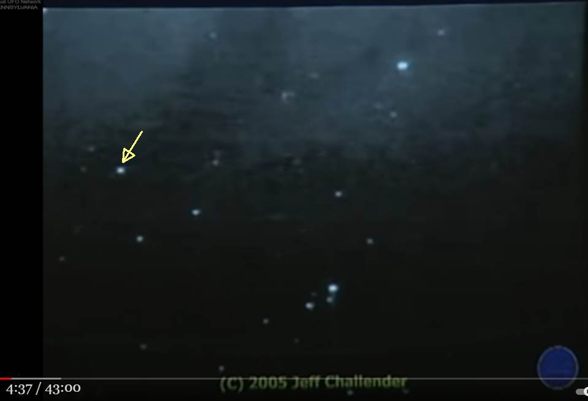
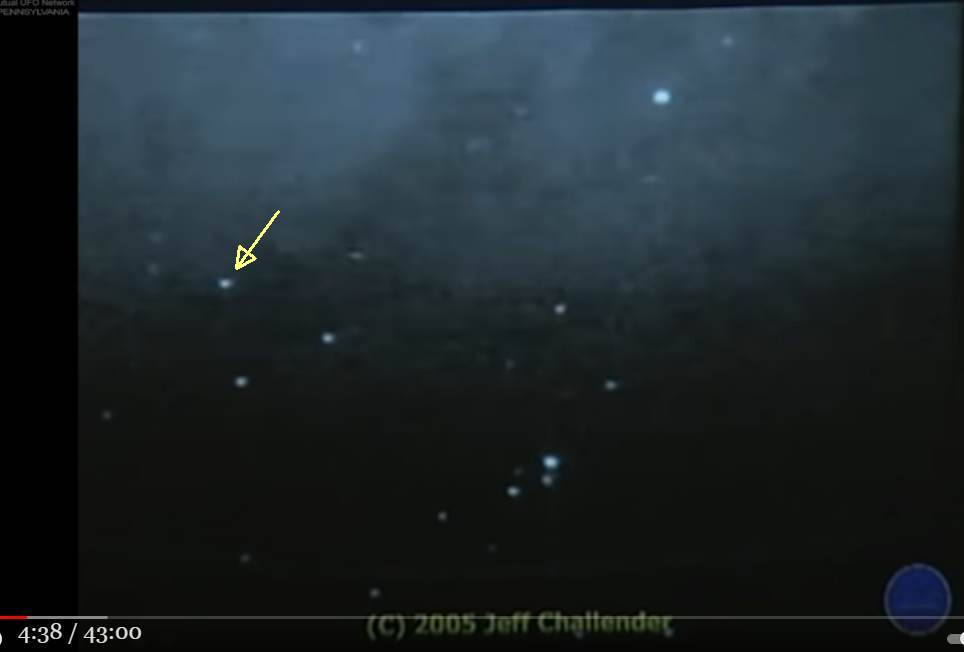
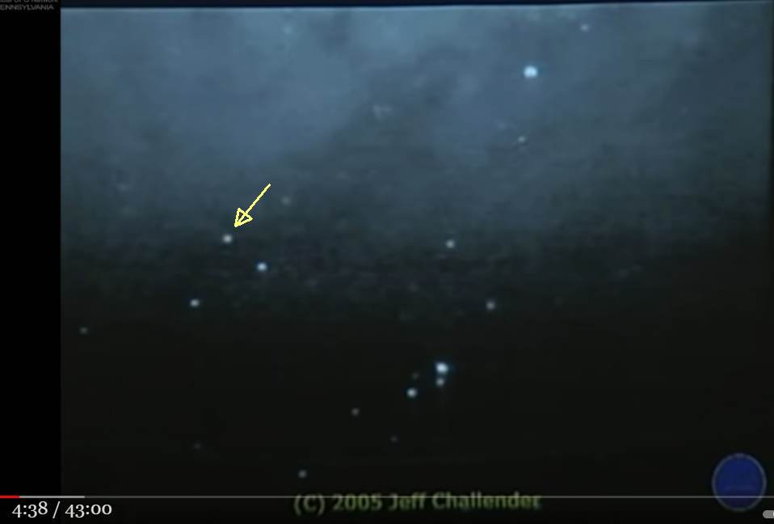
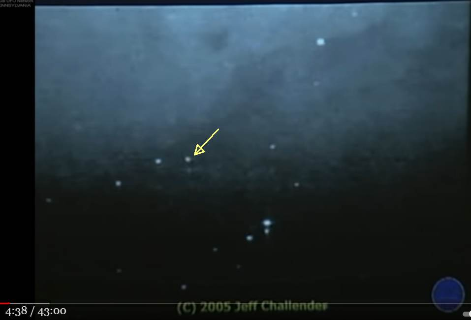
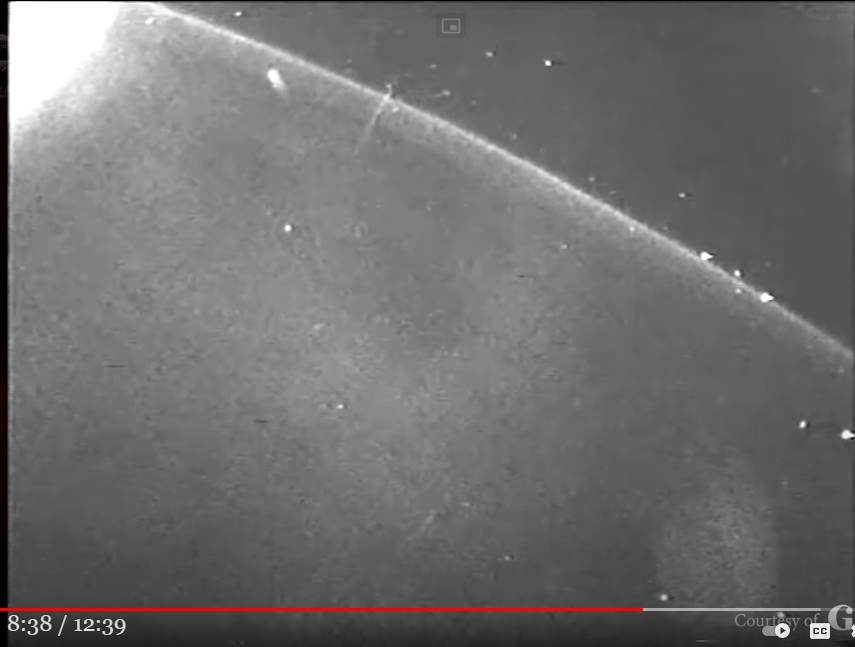

Richard Dolan : This is the strongest evidence that SSP is real → I will explain what it is.


Past article history
(2021-07-19) Added a video I saw of the scene mentioned in the comments. (2021-05-23) CreatedPreface
- Richard Dolan is a firm believer in the existence of "breakway civilazation" (=SSP) and frequently asserts it in his speeches. - In the following video, he discusses a video clip that he claims is one of the "strong evidences" of the breakway civilazation.Summary
- A strange object is seen in the image taken from a satellite. - In 2005, Jeff Challender (deceased) found this scene. The object moves from right to left, then makes a U-turn and returns. - This reversed object is one of the evidences for the existence of "breakway civilazation" (=SSP).Still images cut from the video
- The images, arranged in chronological order, are below.   
Auto-generated voice transcription
▼Click to expand
there's another reason that i think we 03:40 have a secret space program 03:42 there are lots and lots of recorded 03:45 strange 03:46 happenings in earth orbit many 03:49 what are these things jeff challenger uh 03:53 is no longer alive unfortunately he was 03:56 a guy who was absolutely dedicated to uh 03:59 getting copies of nasa space missions 04:02 and then studying them fanatically 04:07 uh jeff jeff was physically disabled i 04:09 mean he really couldn't get out easily 04:11 so this is what he did 04:12 and he spent his entire day after day 04:16 uh going through these and just looking 04:18 for things and 04:20 and to his credit he was a very 04:21 level-headed person if he and he doesn't 04:23 just say everything's a ufo 04:25 he was a very clear-headed person in my 04:28 own view 04:29 but there are a lot of things that he 04:30 noticed on the various space missions 04:32 that are 04:33 very difficult to explain such as this 04:35 next thing that i'm going to show you 04:37 this is a repeating clip so just keep 04:39 watching it's been speeded up 04:41 also okay so in actuality this clip is 04:45 more than two minutes but he's got it so 04:48 that it's like two seconds and you see 04:49 an object doing what appears to be a 04:51 u-turn 04:52 in space i'm going to show you an 04:54 enhancement of it in just a moment 04:56 let's do the enhancement so that there's 04:59 an image stabilization going on and you 05:00 can see it actually 05:02 seeming to maneuver 05:06 now this is in earth orbit during a nasa 05:08 mission from 2005. 05:11 what do they represent well here's one 05:12 thing i would say 05:14 maybe we made those things maybe we 05:16 didn't make those things now if we 05:17 didn't make those 05:18 things i would still say that's probably 05:21 good evidence for a secret space program 05:23 because after all 05:24 if someone's making things that are 05:26 doing that in space 05:28 certainly there would be more than 05:29 enough motivation to have a secret space 05:31 program to go out there 05:33 and to deal with it or investigate it 05:36 obviously and of course if 05:38 well if we made those things and that's 05:40 de facto proof of the secret space 05:41 program 05:43 so there are strange enough things 05:45 happening that i think would warrant it 05:47 there's so much more a breakaway 05:51 civilizationlecture video (43:00)
Richard Dolan - The Implications of Advanced Flying Crafts of Unknown OriginMy view 1
- Richard Dolan claims that the U-turned object is a spacecraft belonging to the "breakway civilazation" (=SSP), which employs innovative Earth-made technology. - Richard Dolan does not say whether NASA, which shot the video, has released any comment on the matter. - However, even without NASA's explanation, we can assume the identity of the U-turned object. The object is probably some sort of microscopic debris, water droplets, or waste surrounding the satellite that shot this video, which was captured by the camera. - Richard Dolan is critical of the object's U-turn and jumps to the SSP spacecraft theory, but the U-turn can be explained by static electricity. - The satellite is charged by the solar wind (plasma) that pours down on it. Because of the protrusions - antennas, solar panels, and attitude control motors - it can be estimated that the electric field distribution around the satellite varies extremely steeply and complexly in space and time. - The fine dust and water droplets surrounding the satellite are subjected to a force of F = qE due to the electric field around the satellite. The sudden change in the electric field distribution around the satellite can naturally cause the fine debris to make a U-turn.MY view 2
- I remembered a similar video scene taken from a satellite. It was uploaded on Youtube, and the source seemed to be an old TV special on UFOs. - I have a vague recollection of the video scene, but it looks like this. - At first, light spot A was seen moving from the upper right to the left of the screen. Suddenly, the light spot made a U-turn and turned back. - Immediately after that, a light spot B passed in a straight line quickly from the lower left to the upper right of the screen. - It appeared as if A anticipated B's attack and avoided it. - That video scene can probably be explained by a sudden change in the electrostatic field around the satellite; it seems that both A and B simply changed their orbits due to a sudden change in the field distribution caused by an electric discharge from a protruding part of the satellite. - The above explanation is mediocre and not enough to be called a riddle. Therefore, the 80% rule was not applied. (2021-05-23)
(2021-07-19 begin)Preface
- In a past article (above) I mentioned the following:- I remembered a similar video scene taken from a satellite. It was uploaded on Youtube, and the source seemed to be an old TV special on UFOs.I saw the video scene in question and have added it below.Corresponding section
・8:10-- Video (12:39)
E.T Base at Aristarchus Crater, Transient Lunar Phenomena Mysteries, and Alien Cover Up! (2021-07-19 end)
Thanks
Translated with www.DeepL.com/Translator
(2022-08-23 translation)
First published article (Japanese)
Richard Dolan : SSP が実在する有力な証拠の一つがコレだ → その正体はたぶん… （＋追加） (2021-07-19)
Postscript (2022-08-23)
- Richard Dolan had long believed that "Gary McKinnon had seen classified NASA material on the Solar warden." Later, Richard Dolan invited Gary McKinnon himself for an interview, and Gary McKinnon categorically denied it. The story of how this happened is covered in the past article below.
- 10:45 - Q) You found the material of the top-secret space fleet ("solar warden"), right? - A) No! It's a hoax. (Richard Dolan is astonished by the unexpected reply.) - 11:30 In fact, this is what happened. I found an Excel document. That Excel document had a column for "non-terrestrial officer," but that does not mean "ET." Non-terrestrial officer" may mean living off-planet (i.e., satellite) (not on Earth). - Q) What do you think now? - A) ...Maybe it's a human soldier serving in an extraterrestrial (location). - 13:05 It would be someone who works at a secret base such as Mars. I think it is around the Navy.video (54:58)
・"PERFECTLY SMOOTH SHELL OF A CRAFT." GARY MCKINNON 1ST INTERVIEW IN YEARS. Richard Dolan Show. ref: Gary McKinnon : The story that I have discovered NASA's space fleet material is a hoax. (2019-03-14)
related article
Gary McKinnon : The M.O. that broke into NASA's computers was simple (2019-03-15)